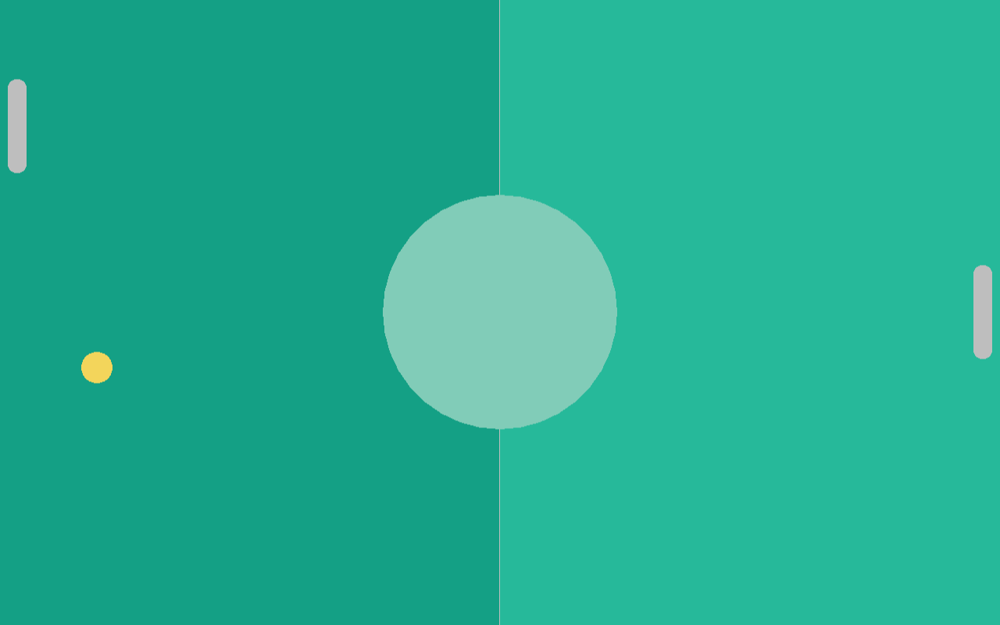

Player and CPU
Next up we need to properly separate the paddle out into two different kinds of paddles, the Player and the Cpu. We will start with the Player, since the paddle we already have is most similar to it.
Player
First we will create a new player.ft file which will contain all the player-specific code. We essentially move the Paddle entity definition to the player.ft file and rename it to Player and then we also move the update function from FPaddleCommon to the Player entity:
player.ft:
use Fip.raylib as rl
use "paddle.ft"
entity Paddle:
data: DPaddle paddle;
func: FPaddleCommon;
Paddle(paddle);
def update(f32 delta):
if rl.IsKeyDown(i32(rl.KeyboardKey.KEY_UP)):
paddle.pos = paddle.pos - (0.0, paddle.speed * delta);
if rl.IsKeyDown(i32(rl.KeyboardKey.KEY_DOWN)):
paddle.pos = paddle.pos + (0.0, paddle.speed * delta);
self.clamp_position();
As you can see, we did not just copy-paste it, we added the paddle name for the DPaddle data and changed FPaddleCommon.clamp_position(paddle) to self.clamp_position() since all entity-functions have an implicit self parameter, it just looks cleaner this way.
And then in the main file we add the use "player.ft" clausel and instead of creating a paddle := Paddle we create a player := Player and rename all occurrences of paddle with player.
This all should have made absolutely zero difference to the program behaviour, but that was just the base work. We now can add player-specific functionality. For example, the reset function to make sure that the player is not spawned in the middle of the field but on the left side of the field instead:
def reset():
paddle.pos = f32x2(10 + paddle.size.x / 2, rl.GetScreenHeight() / 2);
and we call it in the main function right after creating the player, just like we did with the ball:
// Initialize game objects
ball := Ball(DBall(_));
ball.reset();
player := Player(DPaddle(_, f32x2(screen / 2), _));
player.reset();
As you can see, the player now is located at the left side of the screen, where it belongs.
Cpu
Now that the player is at the left side of the screen, where it belongs, we can look at implementing the Cpu entity. For this, we create yet another file, cpu.ft with this content:
cpu.ft:
use Fip.raylib as rl
use "paddle.ft"
entity Cpu:
data: DPaddle paddle;
func: FPaddleCommon;
Cpu(paddle);
def update(f32 ball_y, f32 delta):
// TODO follow ball
return;
def reset():
paddle.pos = f32x2(rl.GetScreenWidth() - paddle.size.x / 2 - 10, rl.GetScreenHeight() / 2);
Next up lets add the use "cpu.ft" clausel to the main function and then initialize, reset, update and draw the cpu in the main file:
cpu := Cpu(DPaddle(_, f32x2(screen / 2), _));
cpu.reset();
// ...
while not rl.WindowShouldClose():
// ...
cpu.update(ball.get_y(), delta);
// ...
cpu.draw();
And now we should see the cpu paddle being drawn at the right side of the game board. However, the ball does not collide with it nor does the cpu paddle try to follow the ball either.

Cpu behaviour
Lets implement the update function of the cpu next:
def update(f32 ball_y, f32 delta):
if paddle.pos.y - 10.0 > ball_y:
paddle.pos.y -= paddle.speed * delta;
else if paddle.pos.y + 10.0 < ball_y:
paddle.pos.y += paddle.speed * delta;
self.clamp_position();
So now you will see that the cpu follows the ball, but the ball does not collide with the cpu paddle yet. For this to work we need to update the check_collisions function in the collisions.ft file from:
def check_collisions(mut Ball ball, FPaddleCommon paddle):
if paddle.collides_with(ball):
print("Collided with paddle!\n");
ball.reflect_v();
to
def check_collisions(mut Ball ball, FPaddleCommon player, FPaddleCommon cpu):
if player.collides_with(ball):
print("Collided with player!\n");
ball.reflect_v();
if cpu.collides_with(ball):
print("Collided with cpu!\n");
ball.reflect_v();
and of course also update the check_collision call in the main function:
// Check for collisions
check_collisions(ball, player, cpu);
And now the ball collides with both the player and the cpu properly.